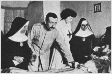

Fidel Pagés Miravé (26 January 1886 – 21 September 1923) was a Spanish military surgeon, known for developing the technique of epidural anesthesia.[1] He practised a wide range of traumatological and surgical techniques, both for war injuries and civil purposes, contributed to the modernisation of surgery in Spain and participated actively in the reorganisation of the Spanish Military Health system in the 1920s. Due to his early accidental death, his pioneering work in epidural anesthesia (or metameric anesthesia as he called it) went unnoticed for many years outside of Spanish speaking countries